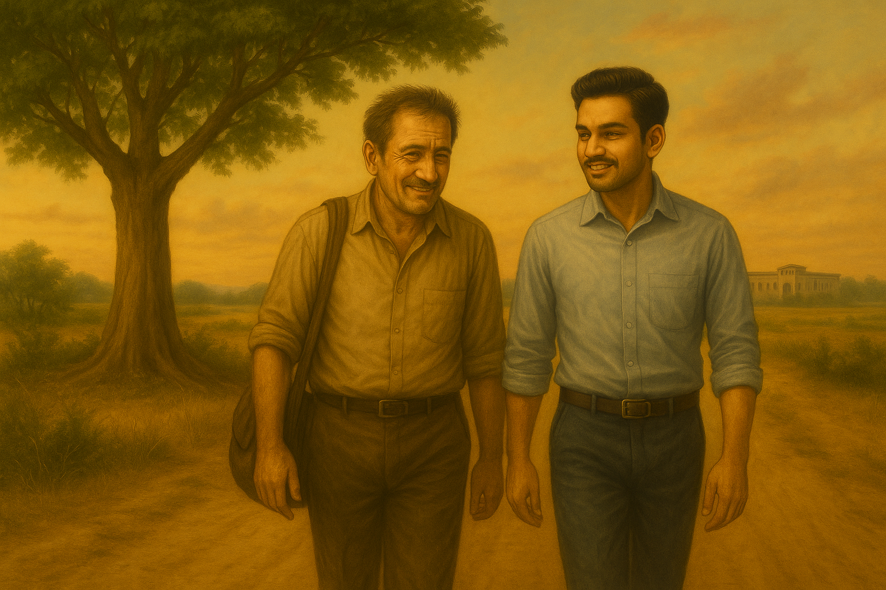

Madan continued to read the letter, voice hoarse: He picked it up from his older version telling him what happened after he drowned into liqour for a year.
"Do you remember Vedant? He used to help with formulas. He found me, pulled me up. Slowly, we began again. We rebuilt the machine, far better this time. We waited for 2034—a solar eclipse with a longer time-lapse. Vedant tuned the machine so it could travel to a precise time. I wanted to return to 1995 and change everything. But with only sixty-nine seconds during that eclipse, I could travel no further back than 2013. So I researched. I visited crime branches, hunted for the exact year Saraswati had travelled. I found it—in her own arrogant YouTube podcast, bragging after she was released. Pitiful."
"And here I am. I couldn't take what she had done. I just wanted her back. She could have sought success with Ponappa—I wouldn't have stopped her. But not like this."
"So learn, my younger self. Do not wait. Saraswati is not coming back. If you want her back, then build the machine better—go back to 1995 and stop this before it ever begins. Time holds all answers. Yours are in the past, or the future. I only hope your life isn't as miserable as mine."
The letter ended there.
Madan's hands dropped. The letter slipped from his grip, falling open on the floor. He sobbed openly, shoulders shaking. Avni said nothing. She stooped, collected the clippings and the letter, then clicked the cuffs over his wrists gently just because it was necessary.
Weeks Later
The gates of the prison creaked open. Madan stepped out, hollow-eyed, carrying only the weight of memory. The evening sun spilled across the road.
Avni waited.
"Thank you," Madan croaked.
She shook her head. "Every piece of evidence in this case was circumstantial. Hypothetical. We had no concrete proof you killed her. Be glad your older version took the weapon with him—back to wherever he came from. Let's hope for the best outcomes."
She turned and walked away.
Madan began walking too, slow at first, then steadier, the echo of Avni's words in his ears. Time does not forgive those who wait.
A kilometre down the road, under a Peepal tree, someone waited—Vedant. His assistant. His friend.
He remebered from the letter that he was the one who pulled him up in the future. Did not say anything to him.
Their eyes met. A smile broke through Madan's grief. Vedant returned it.
Side by side, without words, the two men walked forward. Toward the uncertain horizon. Toward the future.

Written by
Kousick Shanmugam Nagaraj